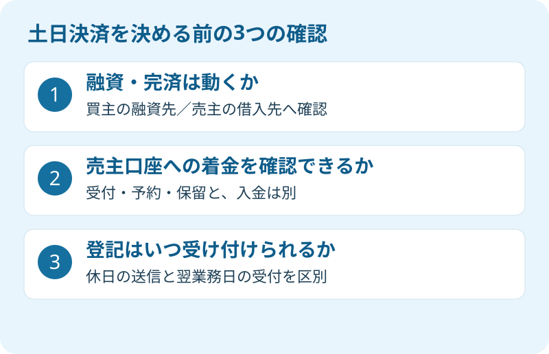

仕事を休みにくい。きょうだいが集まれるのは日曜日だけ。実家の売却で、残代金の決済と鍵渡しを休日に希望する事情は理解できます。ただ、不動産会社の店が開いていることと、取引に必要な処理がその日に終わることは別です。
大石浩之（磐田市／不動産業）です。宅地建物取引士として私は、休日決済を「できる」「できない」の一言で片づけません。2026年9月20日時点の公式情報をもとに、融資、着金、登記受付の順で確認します。決済とは、残代金などを清算し、引渡しと登記の段取りを進める取引の最終段階です。
9月19〜23日の告知は、北洋銀行アプリの確認窓口の話
北洋銀行の2026年9月10日のお知らせは、9月19日土曜日から23日水曜日まで、アプリ振込確認センターの電話受付を休止すると案内しています。銀行休業日に合わせた対応で、確認のため保留となった振込について、問い合わせ受付は9月24日木曜日以降となります。
同銀行は、振込内容によって所定の確認を行う間、振込を保留にする場合があると説明しています。休止期間に保留となると、振込の実行が通常より遅れる場合があり、確認結果によっては実行されないこともあります。対象は同銀行のアプリに関する案内です。
私は、金融犯罪を防ぐための確認と、その影響を日付付きで公表することを評価します。利用者が予定を見直す材料になるからです。ただし、不動産の残代金を受け取る場面では、送信操作が終わっただけで代金を受け取ったことにはできません。予定どおり着金しなかった場合の対応まで、取引側で用意する必要があります。
この告知は、すべての銀行で、すべての振込が5日間止まるという意味ではありません。磐田・袋井の売主が使う銀行や、買主の住宅ローンの融資先に、そのまま当てはめないでください。告知を読む目的は、利用する銀行と送金方法ごとに条件を聞くきっかけを得ることです。
土日決済は、融資・着金・登記の3項目で確かめる
土日の不動産決済を検討するときは、買主の資金が出るか、売主が入金を確認できるか、登記の手続きをどう進めるかを別々に確認します。以下は休日決済の可否を一律に決める基準ではなく、仲介会社と司法書士、金融機関へ相談するための整理表です。
| 項目 | 確認する相手 | 具体的な質問 |
|---|---|---|
| 融資・完済 | 買主の融資先、売主の借入先 | 希望日に融資実行や完済処理ができるか |
| 着金 | 送金側・受取側の銀行 | 送金手段、限度額、保留、入金確認の方法はどうか |
| 登記 | 担当司法書士 | 申請を送る日と登記所の受付日をどう組むか |
買主が住宅ローンを利用するなら、休日にローン相談ができるかではなく、その日に融資実行ができるかを尋ねます。相談窓口の営業案内だけでは、決済の可否までわかりません。融資を使わない取引でも、送金方法と着金確認の問題は残ります。
売主側に借入れが残っているときは、完済と抵当権抹消に必要な書類の受取りも加わります。抵当権は、貸し手が不動産を担保に取る権利です。残債を払うだけで、必要な登記手続きまで自動的に済むとは考えないでください。抵当権とローン残高の確認を先に整理すると、銀行へ聞く内容が明確になります。
私は、送金側の「振込受付」「予約」「保留」と、受取側の口座へ入った状態を区別して説明します。画面の名称は金融機関によって異なります。買主が操作した画面だけを見て鍵を渡す段取りは勧めません。売主がどの口座で入金を確かめるかまで、事前に決めておきます。

休日に送信できても、登記所の受付は翌業務日
法務省の登記・供託オンライン申請システムは、2026年8月3日から利用時間を拡大しています。2026年9月20日に確認した案内では、平日は8時30分〜23時、休日は8時30分〜18時です。12月29日〜1月3日は除かれ、メンテナンスによる停止もあります。
ここは従来の説明のまま書けません。「土日はオンライン申請も送れない」と一律に案内するのは、現在の利用時間と合いません。一方、同システムのFAQは、登記所の受付時間は従来どおり平日17時15分までとしています。オンラインの利用時間が延びても、受付日が同じように広がったわけではありません。
同システムの処理状況ガイドでは、休日や平日17時15分を過ぎて送った申請・請求は、申請先の受付時間外となります。「到達・受付待ち」の状態から、平日の翌業務日8時30分以降に受付が進むという説明です。送信、到達、受付、登記完了を同じ意味で使わないでください。
さらに、2026年9月20日に確認したメンテナンス情報には、9月20日と21日の8時30分〜18時に、すべてのサービスを利用できない予定が掲載されています。通常の休日利用時間だけを見て、この連休も送れると決めることはできません。運転状況と停止予定は、実際の手続き前にも確認が必要です。
私は、司法書士に「休日に送れるか」だけでなく、「いつ受け付けられる想定で、残代金の支払いと引渡しをどう組むか」を聞きます。売主と買主が休日に合意していても、受付までの時間を含む取引の安全性は別の検討です。所有権移転や抵当権抹消など、個別の登記判断は専門家に確認を。
磐田・袋井の売主は、集合できる日より処理できる日
磐田・袋井の実家を遠方から売却する場合、売主が帰省できる日と、金融機関・司法書士が処理できる日を早い段階で照合します。決済日に全員が同じ場所へ集まる形が必要かどうかも、本人確認や書類の準備と合わせて相談する事項です。
私はこう考えます。全員が集まれる日より、お金と登記がつながる日を選ぶべきです。休日にまとめられれば、売主の休暇や交通費の負担を減らせます。その利点は無視できません。ただ、着金や受付が翌業務日へ残るのに、鍵だけを予定どおり渡す形を安易には勧められません。
私自身、仕事を休めない売主へ平日の日程をお願いすることには迷いがあります。だから、先に「平日でなければ無理」と切らず、本人確認や必要書類の確認を事前に進められるか、当日の負担を減らせるかを担当者と整理します。遠隔での対応や事前の書類預かりが可能かは、取引条件と依頼先の判断によります。
私は、希望日が決まったら「その日を守るために何を省くか」ではなく、「その日に必要な条件を満たせるか」を確かめます。条件がそろわないなら、契約上の期日と変更方法を確認し、関係者の合意を取って日程を調整します。売主だけで日付を動かしてよいわけではありません。
金額面の準備は、決済当日に動くお金を参照してください。残代金以外の精算や支払いも一覧にし、送金先ごとの確認を進めます。振込限度額の変更が必要か、受取人情報に誤りがないかは、当日の席で初めて調べる項目にしないのが私の提案です。
今日の一歩は、希望日と銀行名を担当者へ伝える
土日決済を希望する売主が今日できることは、希望日と利用する銀行、売主側のローン残高の有無を仲介担当者へ伝えることです。買主の融資先など売主が知らない情報は、担当者から確認してもらいます。まだわからない点は未確認として残し、無理に埋める必要はありません。
- 希望日に融資・完済の処理が可能か、各金融機関に確認する。
- 売主側の着金確認方法と、保留になった場合の連絡先を決める。
- 司法書士に申請送信日・受付日と引渡しの段取りを確認する。
私は、着金が確認できないときに誰が中止や延期を連絡するかも決めます。鍵、登記関係の書類、領収書を誰が管理するかを整理し、売買契約に沿って対応します。日程全体を見直す場合は、実家売却の段取りと一緒に確認すると、決済日だけを切り離さずに済みます。
富士ヶ丘サービスでは、介護施設の運営を背景に、介護と不動産を一体で相談できる窓口を設けています。磐田市・袋井市を中心に、家族が困らない売却のための予定を整理します。私は希望日を聞いたうえで、処理できる条件を確かめてから日程を案内します。登記や契約の個別判断は専門家に確認を。